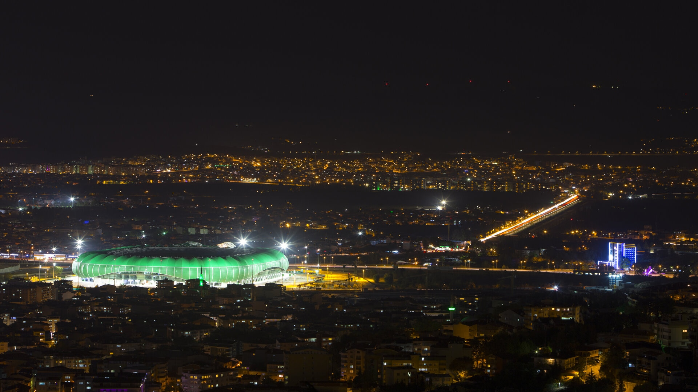
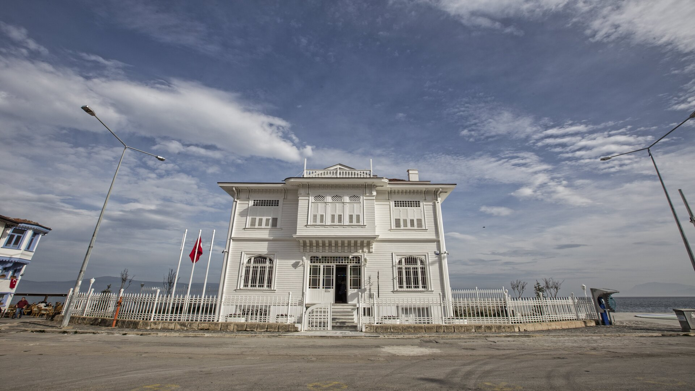

Timsah Arena
Şehrimizin takımı Bursaspor'un maçlarını yaptığı stadyum.

Ulu Camii
1396-1400 yılları arasında yapılmış şehrimizin en önemli tarihi sembollerinden biri.

Koza Han
15. yüzyıl sonlarında II. Bayezid tarafından Bursa'da yaptırılmış bir handır.

Mudanya Mütareke Evi
Türk Kurtuluş Savaşı’nı sonlandıran Mudanya Mütarekesi’nin imzalandığı tarihi evdir.
Bursa
Türkiye'nin en büyük dördüncü büyükşehiri olan Bursa tarihi geçmişiyle ve doğal
güzellikleriyle bilinir.
3.101.833 insana ev sahipliği yapıyor.
Ulu Camii, Koza Han, Yeşil Türbe gibi tarihi eserlere ev sahipliği yapıyor.
Kestane Şekeri ve İskender Kebap gibi lezzetleriyle bilinir.
3.101.833 insana ev sahipliği yapıyor.
Ulu Camii, Koza Han, Yeşil Türbe gibi tarihi eserlere ev sahipliği yapıyor.
Kestane Şekeri ve İskender Kebap gibi lezzetleriyle bilinir.